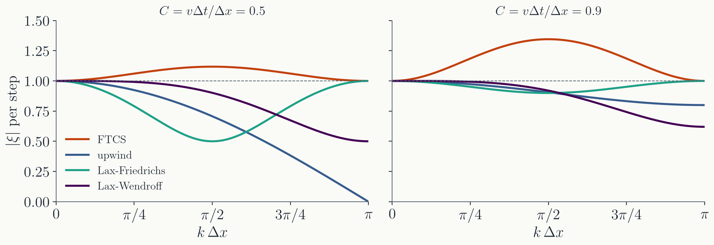
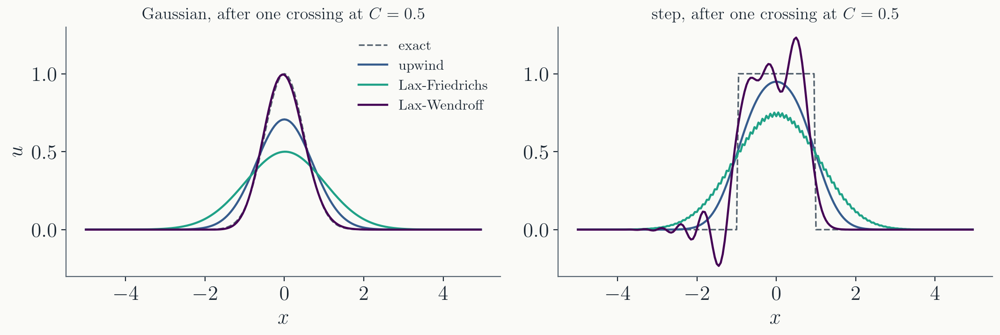
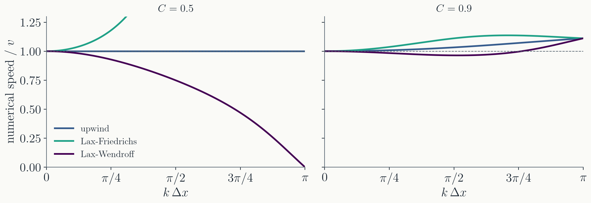

Last time
- The advection equation $\partial_t u + v\,\partial_x u = 0$ carries a profile along at speed $v$: $u = u_0(x - vt)$.
- Characteristics: the curves along which a first-order PDE is an ODE. Where they converge the profile steepens; where they cross, a shock forms.
- The value at $(x, t)$ depends on the initial data in a definite place, the domain of dependence. A scheme had better look there.
- The first scheme we tried, FTCS, blew up.
Today: exactly why it blew up, a test that tells in advance, and three ways to fix it, each with a price.
Part I · Why FTCS blows up
Follow one wave through one step
The scheme again
Points $x_j = j\,\Delta x$, times $t_n = n\,\Delta t$, unknowns $u_j^n$. Forward difference in time, centered in space:
- $C$, the Courant number, is how many grid spacings the flow moves in one step. It is the only parameter of the scheme.
- Euler's method on the system of ODEs $du_j/dt = -v\,(u_{j+1} - u_{j-1})/2\Delta x$, one per grid point. Both halves are things we trust.
FTCS fails
- $C = 0.5$, 200 points, periodic box. The Gaussian survives a while, then a grid-scale oscillation appears, and by 400 steps it is at $2 \times 10^3$.
- A smaller $\Delta t$ delays it and does not cure it. To see why, stop looking at the Gaussian and look at one wave.
Follow one wave
Any profile on the grid is a sum of waves $e^{ikx_j}$, and the scheme is linear, so each wave evolves on its own. Try the solution
$$u_j^n = \xi^n\, e^{i k x_j},$$a wave whose amplitude is multiplied by the same factor $\xi$ every step. Put it into FTCS, using $u_{j \pm 1}^n = \xi^n e^{ikx_j} e^{\pm ik\Delta x}$:
$$\xi = 1 - \frac{C}{2}\left(e^{ik\Delta x} - e^{-ik\Delta x}\right) = 1 - i\,C \sin(k\Delta x).$$$\xi$ is the amplification factor. After $n$ steps the wave has grown by $|\xi|^n$. This is von Neumann's stability analysis, and it takes one line per scheme.
Every wave grows

- $|\xi|^2 = 1 + C^2 \sin^2(k\Delta x)$. Larger than $1$ for every wave except the two ends, at every $C$. Reducing $\Delta t$ only reduces the excess.
- Worst at $k\Delta x = \pi/2$, a wave four cells long: $|\xi| = 1.118$ at $C = 0.5$, which is $10^{19}$ after 400 steps. The Gaussian's own waves have $k\Delta x \approx 0.1$ and grow only $2.2\times$: that is why it looked fine until the four-cell wave, seeded by rounding, caught up.
Part II · Fix 1: take information from upwind
Ask the characteristic
Ask the characteristic
The exact solution says where the new value comes from: go down the characteristic for one step,
$$u(x_j, t_{n+1}) = u(x_j - v\Delta t,\ t_n) .$$
- The foot, $x_j - v\Delta t$, is not a grid point. Read the old solution there by linear interpolation between the two grid points around it, $x_{j-1}$ and $x_j$.
The upwind scheme
The foot lies a fraction $C$ of the way from $x_j$ back to $x_{j-1}$. Linear interpolation gives
- A one-sided difference, taken from the side the flow comes from. For $v < 0$ use $u_{j+1} - u_j$ instead.
- Same cost as FTCS, and it only ever reads information from where the characteristic says it is.
Its amplification factor
Same substitution, $u_j^n = \xi^n e^{ikx_j}$:
$$\xi = 1 - C + C\,e^{-ik\Delta x}, \qquad |\xi|^2 = 1 - 2C(1 - C)\,\big(1 - \cos k\Delta x\big).$$- $1 - \cos k\Delta x \ge 0$, so $|\xi| \le 1$ for every wave exactly when $C(1 - C) \ge 0$: that is $0 \le C \le 1$.
- The CFL condition of last time, now from the waves instead of from the stencil. The two arguments agree, and they always will: a scheme that reads from the wrong place amplifies something.
- At $C = 1$, $\xi = e^{-ik\Delta x}$: modulus one, and the exact phase. The scheme is the exact shift.
Upwind in action
- One crossing of the box. At $C = 1$ both profiles return exactly. At $C = 0.5$ the Gaussian peak has fallen to $0.71$ and the step's corners are gone.
- Stable, and smeared. The next slide says by how much, and why.
The price: numerical diffusion
Expand the scheme in Taylor series about $(x_j, t_n)$ and keep one more order than the equation it was meant to solve. What the upwind scheme actually solves is
$$\frac{\partial u}{\partial t} + v\,\frac{\partial u}{\partial x} = D\,\frac{\partial^2 u}{\partial x^2} + \dots, \qquad D = \tfrac{1}{2}\,v\,\Delta x\,(1 - C).$$- This is the modified equation: advection plus a diffusion term that the scheme added, with a coefficient set by the grid. It vanishes at $C = 1$ and is largest for small steps: at $C = 0.5$, $D = 0.25\,v\Delta x$.
- Diffusion is what averaging does. Each step replaces $u_j$ by a weighted mean of itself and its upwind neighbour, and means are smoother than what they average.
The scheme is first order: the error term is proportional to $\Delta x$. Halve the grid and the smearing halves.
Part III · Fix 2: add diffusion on purpose
Lax-Friedrichs, and the Project 2 flux
The Lax idea
Keep the centered difference, but replace the $u_j^n$ that the step starts from by the average of its neighbours:
$$u_j^{n+1} = \tfrac{1}{2}\left(u_{j+1}^n + u_{j-1}^n\right) - \frac{C}{2}\left(u_{j+1}^n - u_{j-1}^n\right).$$- Amplification factor: $\xi = \cos k\Delta x - i\,C \sin k\Delta x$, so $|\xi|^2 = \cos^2 k\Delta x + C^2 \sin^2 k\Delta x = 1 - (1 - C^2)\sin^2 k\Delta x$.
- $|\xi| \le 1$ for every wave exactly when $C \le 1$. Stable, with the same condition as upwind, and it never had to ask which way the wind blows.
What was added
Subtract $u_j^n$ from both sides and the average becomes a second difference:
$$\frac{u_j^{n+1} - u_j^n}{\Delta t} + v\,\frac{u_{j+1}^n - u_{j-1}^n}{2\Delta x} = \frac{\Delta x^2}{2\Delta t}\,\frac{u_{j+1}^n - 2u_j^n + u_{j-1}^n}{\Delta x^2}.$$- FTCS on the left, a diffusion term on the right with $D = \Delta x^2/2\Delta t = v\Delta x/2C$. Diffusion damps the short waves that FTCS amplified; enough of it, and nothing grows.
- The price is the same as upwind's, and larger: at $C = 0.5$, $D = 0.75\,v\Delta x$ against $0.25$. The Gaussian peak after one crossing is $0.50$, against $0.71$.
- One wave escapes: at $k\Delta x = \pi$, the two-cell checkerboard, $|\xi| = 1$ at every $C$. The average of the neighbours of a checkerboard is the checkerboard. It shows as fine ripples on the step.
Lax-Friedrichs in action
- Exact at $C = 1$, like upwind, and for the same reason: the scheme becomes a shift.
- At $C = 0.5$ it smears three times faster than upwind, and the checkerboard ripples ride on the step.
This is the Project 2 flux
Write the scheme as fluxes through the faces between cells. The Lax flux through the face between $j$ and $j + 1$ is
$$F_{j+1/2} = \tfrac{1}{2}\left(v u_j + v u_{j+1}\right) - \frac{\Delta x}{2\Delta t}\left(u_{j+1} - u_j\right):$$the average of the two cells' fluxes, minus a diffusion proportional to the jump across the face.
- The Rusanov flux of the project is the same formula with the coefficient $\Delta x/2\Delta t$ replaced by half the fastest signal speed on the face, $v_\max /2$: the least diffusion that still covers every wave the gas can send.
- That is why the fluid code is stable with centered fluxes and no upwinding, and why its vortices smear. You will measure both.
Part IV · Fix 3: be second order
Lax-Wendroff
One more term of Taylor
Euler in time keeps one term of the Taylor series. Keep two, and use the equation itself to turn time derivatives into space derivatives:
$$u^{n+1} = u + \Delta t\,\frac{\partial u}{\partial t} + \frac{\Delta t^2}{2}\frac{\partial^2 u}{\partial t^2}, \qquad \frac{\partial u}{\partial t} = -v\,\frac{\partial u}{\partial x}, \quad \frac{\partial^2 u}{\partial t^2} = v^2\,\frac{\partial^2 u}{\partial x^2}.$$Centered differences for both space derivatives give the Lax-Wendroff scheme:
$$u_j^{n+1} = u_j^n - \frac{C}{2}\left(u_{j+1}^n - u_{j-1}^n\right) + \frac{C^2}{2}\left(u_{j+1}^n - 2u_j^n + u_{j-1}^n\right).$$FTCS plus a second difference, like Lax, but with the coefficient $C^2/2$ that the Taylor series asks for instead of the $1/2$ that Lax put in by hand. Second order in $\Delta t$ and $\Delta x$.
Stable, and accurate
- $|\xi| \le 1$ for every wave exactly when $C \le 1$. Same condition a third time.
- The damping is fourth order in $k\Delta x$ for long waves, where upwind's was second order. The Gaussian comes back from one crossing at $C = 0.5$ with its peak at $0.995$: against $0.71$ for upwind and $0.50$ for Lax.

The price: dispersion

- The phase of $\xi$ is how far the wave moved in one step. Exact: $-Ck\Delta x$. Lax-Wendroff moves short waves too slowly, $0.75\,v$ at $k\Delta x = \pi/2$ for $C = 0.5$, and the two-cell wave not at all.
- A step is made of short waves. They fall behind, and the step arrives with a train of oscillations trailing each edge: overshoot $1.23$, undershoot $-0.23$ after one crossing. Lax-Friedrichs has the opposite error: its short waves run ahead.
Lax-Wendroff in action
- The Gaussian is carried almost untouched, which neither of the first-order schemes could do.
- The step grows wiggles behind each edge, which neither of the first-order schemes did. Second order buys accuracy on smooth solutions and pays for it at jumps.
Part V · Choosing
Diffusion or dispersion
Three schemes, one table
| scheme | reads | order | stable for | leading error | Gaussian peak after one crossing, $C = 0.5$ | step |
|---|---|---|---|---|---|---|
| FTCS | $j - 1, j, j + 1$ | 1 | never | growth | blows up | blows up |
| upwind | $j - 1, j$ | 1 | $C \le 1$ | diffusion, $\tfrac{1}{2} v\Delta x (1 - C)$ | $0.71$ | smeared |
| Lax-Friedrichs | $j - 1, j + 1$ | 1 | $C \le 1$ | diffusion, $\tfrac{1}{2} v\Delta x (1 - C^2)/C$ | $0.50$ | smeared, ripples |
| Lax-Wendroff | $j - 1, j, j + 1$ | 2 | $C \le 1$ | dispersion, $\tfrac{1}{6} v\Delta x^2 (1 - C^2)$ | $0.995$ | wiggles |
- All three stable schemes are exact at $C = 1$ and worst at small $C$: a smaller time step is not more accurate here. Run as close to the CFL limit as you dare.
- First order smears, second order wiggles. The wiggles are confined to jumps; the smearing is everywhere.
Which to use
- Smooth solutions: a second-order scheme, or higher. The dispersion error shrinks as $\Delta x^2$ and there are no jumps to excite it.
- Solutions with shocks or fronts: you need diffusion at the jump, and would rather not have it elsewhere. The modern answer is a second-order scheme that switches to first order where the solution is not smooth, a limiter, and a flux with just enough built-in diffusion to cover the fastest wave.
- That second thing is the Project 2 scheme: second-order extrapolation to the cell faces, and the Rusanov flux. It has no limiter, which is why it must smooth its initial jumps and why its vortices blur. The resolution study in the project measures the blur.
Every scheme has an error. The choice is what kind, and where.
Summary
- Von Neumann: put $\xi^n e^{ikx_j}$ into the scheme; it is stable if $|\xi| \le 1$ for every $k$. One line per scheme, and it predicts the blow-up before any run.
- FTCS: $|\xi|^2 = 1 + C^2\sin^2 k\Delta x$, unstable at every $C$.
- Three fixes, one condition: upwind, Lax-Friedrichs and Lax-Wendroff are all stable for $C \le 1$ and exact at $C = 1$.
- Two prices: first-order schemes add diffusion, $D \propto v\Delta x$; the second-order scheme adds dispersion and wiggles at jumps. The modified equation says which, and how much.
Next time: the diffusion equation, where the explicit scheme is stable but the time step is tiny, and the implicit schemes that fix it. Then the wave equation on a staggered grid.